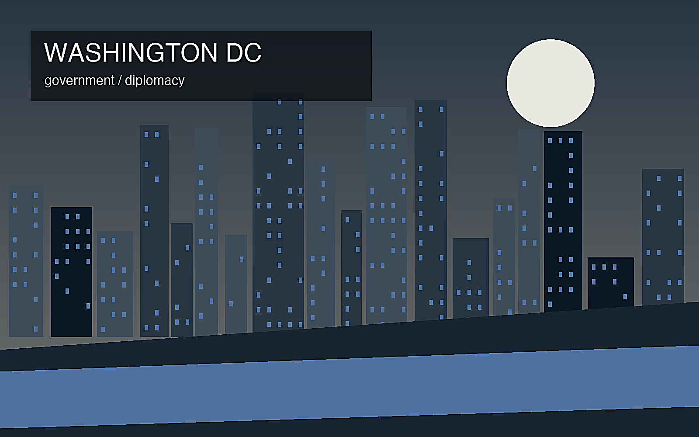
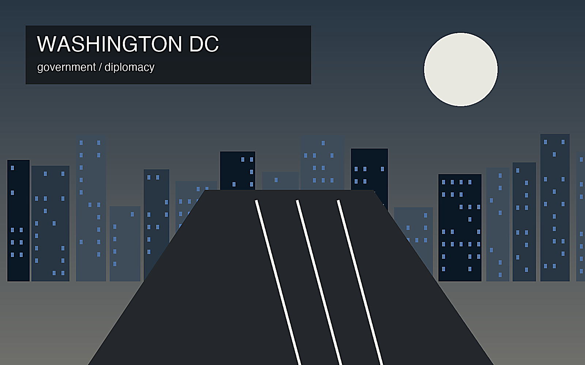

地政学
連邦政府、議会、最高裁、大使館、防衛関連機関が集中し、周辺郊外まで行政経済が広がる。

🇺🇸 アメリカ合衆国 / 北米 / World City Atlas
連邦政府と外交の都市圏。世界都市として、経済規模だけでなく、地理、産業、宗教文化、暮らし、観光を分けて読みます。
都市の骨格
連邦政府、議会、最高裁、大使館、防衛関連機関が集中し、周辺郊外まで行政経済が広がる。

連邦政府、議会、最高裁、大使館、防衛関連機関が集中し、周辺郊外まで行政経済が広がる。
政府調達、法律、シンクタンク、防衛、大学、医療、観光が雇用を支える。
黒人教会、各国移民の宗教施設、国立記念空間が都市の公共性を作る。
ナショナルモール、博物館、記念碑、ジョージタウン、アーリントンが政治と観光をつなぐ。
Geography
都市の経済力は、地図上の位置、港湾、鉄道、空港、河川、周辺都市との関係から生まれます。
連邦政府、議会、最高裁、大使館、防衛関連機関が集中し、周辺郊外まで行政経済が広がる。
ワシントンDCを単体の市街地としてではなく、周辺の住宅地、産業地、物流施設、教育機関と接続した都市圏として見ると、GDPの大きさが日々の通勤、土地利用、観光、文化施設の配置にどう表れているかが分かります。
政府調達、法律、シンクタンク、防衛、大学、医療、観光が雇用を支える。
この都市では、華やかな中心業務地区の背後に、清掃、建設、配送、調理、介護、教育、保守、警備といった日常的な労働があります。都市の経済規模を見るときは、数字だけでなく、その数字を支える人と場所を同時に見る必要があります。
Industry
主力産業だけでなく、周辺の小さな仕事が都市を毎日動かしています。
Culture
宗教施設、祭礼、市場、劇場、大学、移民地区は、都市の経済とは別の時間を保存します。
黒人教会、各国移民の宗教施設、国立記念空間が都市の公共性を作る。
ナショナルモール、博物館、記念碑、ジョージタウン、アーリントンが政治と観光をつなぐ。